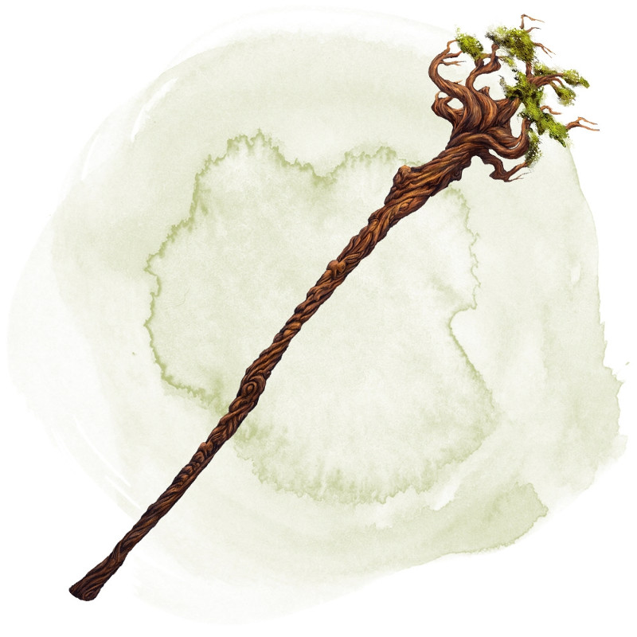

Staff of the Woodlands
[ Bâton des forêts ]
Staff, rare (requires attunement by a druid)
This staff can be wielded as a magic quarterstaff that grants a +2 bonus to attack and damage rolls made with it. While holding it, you have a +2 bonus to spell attack rolls.
The staff has 10 charges for the following properties. It regains 1d6 + 4 expended charges daily at dawn. If you expend the last charge, roll a d20. On a 1, the staff loses its properties and becomes a nonmagical quarterstaff.
Spells. You can use an action to expend 1 or more of the staff's charges to cast one of the following spells from it, using your spell save DC: animal friendship (1 charge), awaken (5 charges), barkskin (2 charges), locate animals or plants (2 charges), speak with animals (1 charge), speak with plants (3 charges), or wall of thorns (6 charges).
You can also use an action to cast the pass without trace spell from the staff without using any charges.
Tree Form. You can use an action to plant one end of the staff in fertile earth and expend 1 charge to transform the staff into a healthy tree. The tree is 60 feet tall and has a 5-foot diameter trunk, and its branches at the top spread out in a 20-foot radius. The tree appears ordinary but radiates a faint aura of transmutation magic if targeted by detect magic. While touching the tree and using another action to speak its command word, you return the staff to its normal form. Any creature in the tree falls when it reverts to a staff.
The staff has 10 charges for the following properties. It regains 1d6 + 4 expended charges daily at dawn. If you expend the last charge, roll a d20. On a 1, the staff loses its properties and becomes a nonmagical quarterstaff.
Spells. You can use an action to expend 1 or more of the staff's charges to cast one of the following spells from it, using your spell save DC: animal friendship (1 charge), awaken (5 charges), barkskin (2 charges), locate animals or plants (2 charges), speak with animals (1 charge), speak with plants (3 charges), or wall of thorns (6 charges).
You can also use an action to cast the pass without trace spell from the staff without using any charges.
Tree Form. You can use an action to plant one end of the staff in fertile earth and expend 1 charge to transform the staff into a healthy tree. The tree is 60 feet tall and has a 5-foot diameter trunk, and its branches at the top spread out in a 20-foot radius. The tree appears ordinary but radiates a faint aura of transmutation magic if targeted by detect magic. While touching the tree and using another action to speak its command word, you return the staff to its normal form. Any creature in the tree falls when it reverts to a staff.
Dungeon Master´s Guide (SRD)
